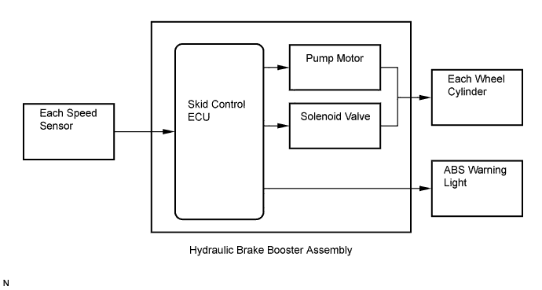
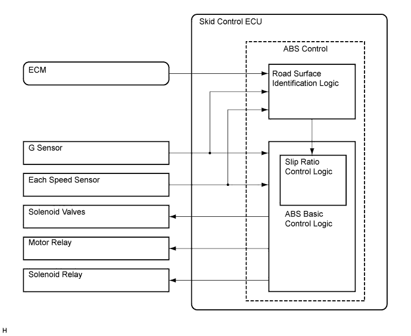
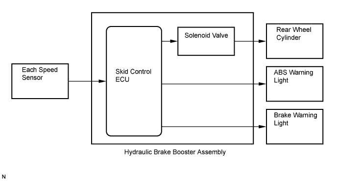
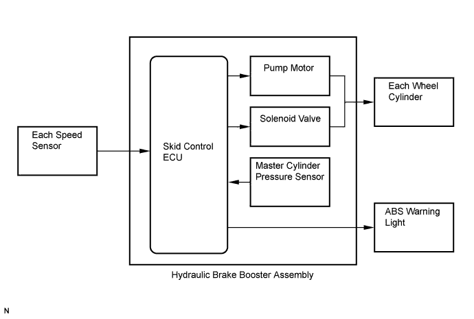

ANTI-LOCK BRAKE SYSTEM > SYSTEM DESCRIPTION |
| SYSTEM DESCRIPTION |
Multi-terrain ABS


EBD (Electronic Brake force Distribution)
The EBD control utilizes the ABS, realizing proper brake force distribution between the front and rear wheels in accordance with driving conditions.
In addition, when braking while cornering, it also controls the brake forces of the right and left wheels, helping to maintain vehicle behavior.

BA (Brake Assist)
The primary purpose of the brake assist system is to provide an auxiliary brake force to assist the driver who cannot generate a large enough brake force during emergency braking, thus helping to maximize the vehicle braking performance.
